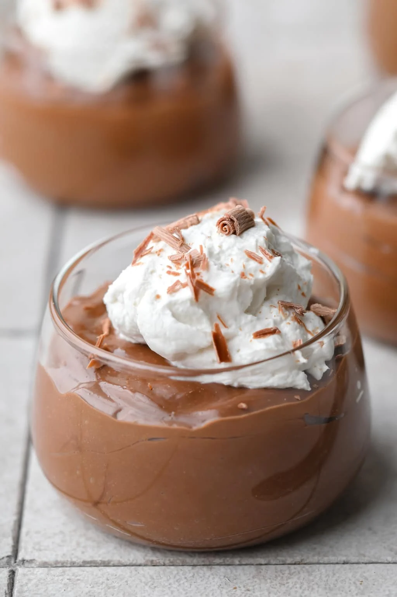

Chocolate Mousse

Description
Tofu Chocolate Mousse is a silky smooth vegan dessert
that will make any chocolate lover smile! Easy to
make with only 6 ingredients.
Ingredients
- 1 1/2 cups dairy free chocolate chips
- 12 ounces silken tofu
- 1/4 cup vegan cream or almond, coconut milk
- 1/2 cup granulated sugar or maple syrup, to taste*
- 1 teaspoon pure vanilla extract
- 1/8 teaspoon salt
Steps
- Melt the chocolate chips in a microwave in
30 second intervals, stirring in between, until
melted and smooth. Alternatively, melt over a
double boiler on the stovetop.
- Let the chocolate cool for 5 minutes, then add
to a high powered blender along with the silken
tofu, cream or milk, sugar, vanilla and salt.
Blend until very smooth, scraping down the sides
as needed.
- Pour the mousse into glass jars and refrigerate
until ready to serve. Ideally, let it chill for
an hour so it can firm up.
- Top with vegan whipped cream and fresh fruit, if
desired.